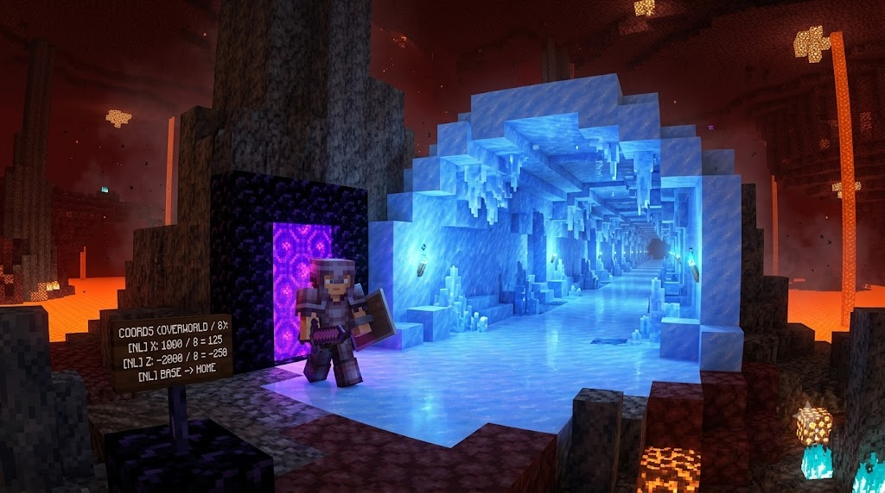

Categoría: Minecraft Técnico
Cómo conectar portales del Nether para viajar miles de bloques en segundos
LFZ Team
•
9 de Agosto, 2026

El viaje rápido de Minecraft
El Nether no es solo un lugar lleno de lava y peligro, es la autopista natural de Minecraft. Gracias a la matemática del juego, 1 bloque recorrido en el Nether equivale a 8 bloques en el Overworld.
La regla del 1 a 8
Si construyes tu casa en las coordenadas `X: 800, Z: 800` en el Overworld y quieres llegar rápido a una aldea en `X: 8000, Z: 8000`, caminar 7000 bloques te tomaría horas. ¡Pero en el Nether, esa distancia es solo de 875 bloques!
Cómo enlazarlos perfectamente
- Anota las coordenadas X y Z de tu portal en el Overworld. (Ejemplo: X=80, Z=-160). Ignora la Y (altura).
- Divide esas coordenadas entre 8. (Resultado: X=10, Z=-20).
- Entra al Nether. Dirígete EXACTAMENTE a las coordenadas X=10, Z=-20 y construye un portal ahí.
- Enciéndelo y entra. ¡Estarás vinculado perfectamente a tu casa!
Construir túneles de hielo en el techo del Nether con botes te permitirá viajar decenas de miles de bloques en menos de un minuto.